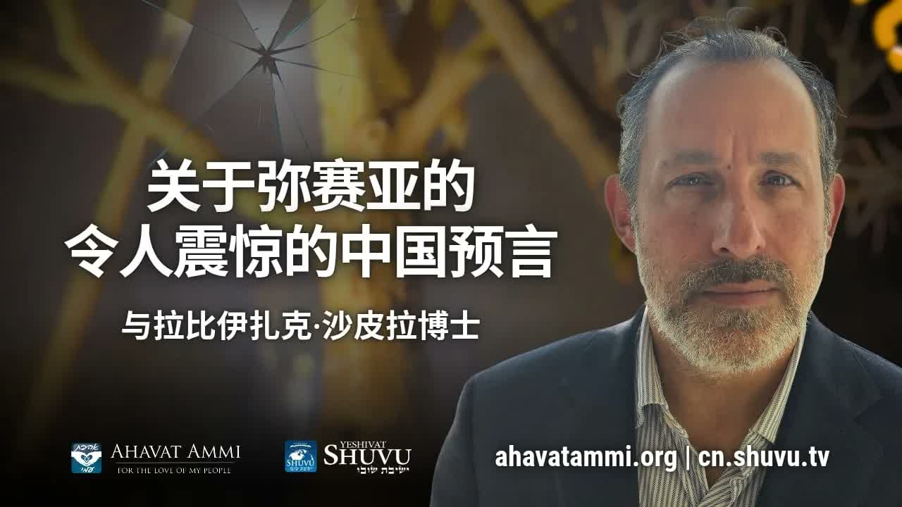

出埃及的蓝图 ── 给末世中国的震撼预言 The Exodus Blueprint — A Shocking End-Times Prophecy for China
沙皮拉拉比博士从中国现场开讲，把《弥迦书》七章 15 节、《以赛亚书》六十三章、《出埃及记》连成一条线，论证：末世并不是新故事——它正是出埃及的循环，而救赎之歌(Shir shel Ge'ulah, שיר של גאולה) 是穿越彌賽亞陣痛唯一的钥匙。 Speaking live from China, Rabbi Dr. Shapira connects Micah 7:15, Isaiah 63, and the Book of Exodus into a single line: the End Times are not a new story — they are the Exodus repeating itself, and the Songs of Redemption (Shir shel Ge'ulah, שיר של גאולה) are the only key that brings believers through the birth pangs of Messiah.
拉比沙皮拉以一个直接的论断开场：「出埃及记就是末世的故事，就是末世的模板。」 在他看来，西方教会近年所流行的「末世剧本」——一个干净的、被提走的、与以色列脱钩的剧本——并不是先知所描绘的图景。弥迦书 七章 15 节明明地说：「我要把奇事显给他们看，正如出埃及之日。」 这是先知对彌賽亞日子的一句承诺，也是一张张开在你我面前的蓝图：末世必有摩西式的领袖，必有法老式的体系，必有红海式的过犯，也必有三首救赎之歌——而这一切今天正在以中国为现场的彌賽亞复兴里逐一展开。在最尖锐的一处，拉比向所有呼喊耶书亚之名却敌视以色列的国家直接发出警告：「他们所敬拜的那一位，到后来要毁灭他们。这是令人震惊的一个模板。」 Rabbi Shapira opens with a direct claim: “The Book of Exodus is the End-Times story — it is the End-Times template.” In his reading, the popular Western end-times script — a clean, raptured, Israel-detached script — is not the picture the prophets drew. Micah 7:15 says plainly: “As in the days when you came forth out of Egypt, I will show you wonders.” That is the prophet's promise about the days of Messiah, and it is a blueprint laid open in front of us: the End Times will have a Moses-figure, a Pharaonic system, a Red-Sea crossing, and the three Songs of Redemption — and all of this, the rabbi argues, is unfolding right now in a Messianic awakening with China at its center. At his sharpest moment, he turns directly to every nation that names Yeshua while hating Israel and issues a warning: “The very One they worship is the One who will destroy them in the end. This is a shocking template.”
一、弥迦书 7:15 ── 末世的蓝图经文I. Micah 7:15 — The Blueprint Verse
拉比沙皮拉的整个论证有一个支点经文，就是弥迦书 7:15。希伯来文是 kimei tzetcha me-eretz mitzrayim ar'enu nifla'ot（כימי צאתך מארץ מצרים אראנו נפלאות）——「如同你出埃及地的日子，我必把奇事 (nifla'ot, נפלאות) 显给他们看。」这一节并不是怀旧；它是预言。先知所指的「那日子」，按拉比传统就是彌賽亞的日子 (Yemot Ha-Mashiach, ימות המשיח)。 Rabbi Shapira's entire argument hangs on one verse: Micah 7:15. The Hebrew reads kimei tzetcha me-eretz mitzrayim ar'enu nifla'ot (כימי צאתך מארץ מצרים אראנו נפלאות) — “As in the days when you came out of the land of Egypt, I will show wonders (nifla'ot, נפלאות).” This is not nostalgia. It is prophecy. The “days” the prophet means, in the rabbinic tradition, are the Days of Messiah (Yemot Ha-Mashiach, ימות המשיח).
「正如在埃及出埃及那样，我将在未来也给你们显现一样的奇蹟。你认为弥迦先知说的是哪一天呢？他预言的就是彌賽亞将来的日子。他透过先知告诉我们，我们要经历的就是像出埃及一样的这样的一个蓝图。」——沙皮拉拉比博士 “Just as in the exodus from Egypt, I will also show you the same miracles in the future. Which day is the prophet Micah referring to? He is prophesying the days of the Messiah. Through the prophet, He tells us: what we are about to experience is a blueprint just like the Exodus.”— Rabbi Dr. Itzhak Shapira
拉比从这句经文推出一条极其重要的诠释规则：要明白未来，必须先读懂过去。末世不是一份新文件——它是一份循环展开的旧档案。如果你想知道彌賽亞日子里会发生什么，翻开《出埃及记》，按顺序读：奴役、十灾、过红海、旷野、西奈、应许之地。这是一张已经打印好的地图。 From this single verse, the rabbi derives an interpretive rule: to understand the future, you must first read the past. The End Times are not a fresh document — they are an old file cycling forward. If you want to know what the Days of Messiah look like, open the Book of Exodus and read it in order: slavery, ten plagues, crossing the Sea, the wilderness, Sinai, the Land. The map has already been printed.
二、摩西范式 ── 从体制内被兴起、毁灭体制的领袖II. The Moses Paradigm — A Deliverer Raised Inside the System That He Will Then Destroy
拉比让我们再仔细地看摩西的身份。摩西（Moshe, משה）在哪里出生？在埃及。被谁保护、被谁喂养、被谁教导宫廷之礼？也是埃及——法老的女儿亲手抚养他。但最终毁灭埃及的呢？还是他。神所用的救赎者，是从被审判的体制里被兴起的。这并不是巧合，乃是神的方式。 Look closely at Moses. Moshe (משה) — where was he born? In Egypt. Who protected him, fed him, taught him court manners? Egypt — Pharaoh's daughter raised him with her own hand. And who finally destroyed Egypt? Moses. The pattern is unmistakable: the deliverer God uses is raised inside the very system God will judge. This is not coincidence. This is His way.
把这条线延长到末世，就得到拉比所提出的「以东」(Edom, אדום) 范式。以赛亚书 六十三章问：「这从以东来、穿红衣裳的是谁？」——希伯来文 Mi zeh ba me-Edom, chamutz begadim me-Botzra?（מי זה בא מאדום חמוץ בגדים מבצרה）。在拉比传统里，以东 是叫嚣耶书亚之名却敌挡神百姓的「基督教国家」之代号。从以东出来的那一位，并不是来温柔安慰他们的——他是来审判他们的，正如摩西不是来安慰埃及的。 Extend the line into the End Times and you arrive at the rabbi's Edom (אדום) paradigm. Isaiah 63 asks: “Who is this who comes from Edom, with crimson-stained garments from Botzrah?” — Hebrew Mi zeh ba me-Edom, chamutz begadim me-Botzra? (מי זה בא מאדום חמוץ בגדים מבצרה). In the rabbinic reading, Edom is shorthand for the “Christian nations” that loudly profess Yeshua's name while opposing His people. The One who comes out of Edom is not coming to console them — He is coming to judge them, just as Moses did not come to console Egypt.
「许多基督教国家，他们呼喊、爱、并且敬畏耶稣的名，将被同一位彌賽亞来毁坏、来灭掉，就是他们敬拜的那一位，到后来要毁灭他们。这是令人震惊的一个模板。」——沙皮拉拉比博士 “Many Christian nations — those who cry out, love, and revere the name of Yeshua — will be destroyed by the very same Messiah. The One they worship will, in the end, destroy them. This is a shocking template.”— Rabbi Dr. Itzhak Shapira
三、犹太的王 ── 一位犹太法官III. A Jewish King — and a Jewish Judge
拉比非常直接地把基督教世界中常被遗忘的一点摆在桌上：耶书亚回来的时候，不是以一位「无国籍」的属天人物回来，而是以一位犹太君王 (Melech Yehudi, מלך יהודי) 和犹太法官 (Shofet Yehudi, שופט יהודי) 回来。祂会按祂自己的民族、祂自己的妥拉、祂自己与亚伯拉罕、以撒、雅各所立的约——来审判万国。 Rabbi Shapira places on the table a fact Christian theology often forgets: when Yeshua returns, He does not return as a “stateless” heavenly figure — He returns as a Jewish King (Melech Yehudi, מלך יהודי) and a Jewish Judge (Shofet Yehudi, שופט יהודי). He judges the nations by His own people, by His own Torah, by His own covenant with Abraham, Isaac, and Jacob.
这就把「列国如何对待以色列」变成一个最终的诊断指标。在拉比看来，那些口里高呼耶书亚之名、手上却在助长反犹与反以色列的政府、媒体、与教会，将面临一个无法逃避的问题：「你审判的根据，是法官的妥拉，还是你自己的舆论？」 This turns how a nation treats Israel into the final diagnostic. In the rabbi's reading, governments, media outlets, and churches that loudly invoke Yeshua's name while quietly feeding antisemitism and anti-Israel hostility will face one unavoidable question on that day: “Was your standard the Judge's Torah — or your own public opinion?”
四、我们身处的审判时期IV. The Era of Judgment We Are Already In
拉比一边说一边把镜头从经文拉回现场。他不是单单在评论中国——他是在评论全世界。「美国现在处在一个内战的边缘。欧洲还有他们的政府现在都在倒塌。中东现在在战争之中，每一天都有新的对立的事件在争战。」这并不是耸人听闻——这是他对今天的报章头条所读出的「彌賽亞陣痛」(Hevlei Ha-Mashiach, חבלי המשיח) 的形貌。 He pulls the camera back from the text to the present. He is not commenting only on China — he is commenting on the whole world. “The United States is on the brink of civil war. The governments of Europe are collapsing. The Middle East is at war, with a new flashpoint every day.” This is not alarmism. This is what he reads, on today's front pages, as the unmistakable shape of Hevlei Ha-Mashiach (חבלי המשיח) — the birth pangs of the Messiah.
他随即引用耶书亚自己在末世讲论中最常被引用的话——「忍耐到底的，必然得救。」（马太福音 24:13）——并把它转化为一个属于此刻的实践问题：在战争、内乱、社会体系崩塌、甚至信徒群体瓦解的日子里，我们究竟如何能够「忍耐到底」？ He immediately quotes Yeshua's most-cited end-times line — “He who endures to the end shall be saved” (Matthew 24:13) — and converts it into a practical question for the present hour: in days of war, civil unrest, collapsing institutions, and disintegrating believing communities, how do we actually endure?
五、秘密 ── 三首救赎之歌 (Shirei Ge'ulah)V. The Secret — The Three Songs of Redemption
拉比所提出的答案，乍听之下太简单，几乎要让人怀疑——但他坚持要在末世中国的弟兄姊妹面前，把它说得无可回避：唯一能让你「忍耐到底」的方法，是歌唱。不是娱乐的歌、不是悦耳的歌，而是救赎之歌（Shir shel Ge'ulah, שיר של גאולה）——一种与摩西的灾难时刻直接连结的歌。 His answer sounds, at first hearing, almost too simple — but he insists on placing it in front of the Chinese remnant without softening it: the only way to “endure to the end” is to sing. Not entertainment songs. Not pleasant songs. The Songs of Redemption (Shir shel Ge'ulah, שיר של גאולה) — songs tied directly to the disaster moments of Moses.
他指出，摩西一生只唱了三次歌，而每一次都在患难当中： He points out that Moses, across his entire life, sings only three times — and every one of them is in the middle of disaster:
第一首 ── 井之歌（Shir Ha-Be'er, שיר הבאר，《民数记》21:17）。摩西刚刚逃离法老的追杀，落在旷野中没有水的边缘。井从地上涌出，他在恐惧之中开口歌唱。
第二首 ── 海之歌（Shirat Ha-Yam, שירת הים，《出埃及记》15）。红海被劈开、法老的军队沉入海中。这是那个救赎之歌——直到今天，犹太人每周安息日依然在念诵它。
第三首 ── 「听啊」之歌（Ha'azinu, האזינו，《申命记》32）。摩西在生命的最后一日，作为遗言唱出的那首预言之歌，开头就是「Ha'azinu ha-shamayim」（「诸天哪，侧耳而听」）。
First — the Song of the Well (Shir Ha-Be'er, שיר הבאר, Numbers 21:17). Moses has just fled Pharaoh and is in the wilderness on the edge of dying of thirst. A well springs from the ground — and he sings in the middle of his terror.
Second — the Song at the Sea (Shirat Ha-Yam, שירת הים, Exodus 15). The Red Sea is split, Pharaoh's army drowns, and Israel sings the song of redemption — a song Jews recite every Shabbat to this day.
Third — Ha'azinu (האזינו, Deuteronomy 32). The dying Moses delivers his prophetic farewell as a song: “Ha'azinu ha-shamayim” — “Give ear, O heavens.”
「唯一能够让你来存活、能够战胜的，就是高歌。唯有一个方法让你在这样的日子能够存活，甚至能够兴起，就是高歌。」——沙皮拉拉比博士 “The only way for you to survive and overcome is to sing praises. There is only one way for you to survive and even rise up in days like these — to sing.”— Rabbi Dr. Itzhak Shapira
这三首歌共同构成「Shirei Ge'ulah」（שירי גאולה，「救赎之歌」复数）。它们的共通点是：都是在灾难还没结束、敌人还没全灭、出路还看不见的时候，先开口歌唱。这并不是浪漫——这是先知性的策略。歌唱本身把一个人的灵带到「神已经胜利」的时间线，使他在「尚未看见」的空间里得以站立。 These three songs together are the Shirei Ge'ulah (שירי גאולה, “Songs of Redemption”). Their common pattern: each is sung before the disaster ends, before the enemy is fully defeated, before the way out is visible. This is not romanticism — it is prophetic strategy. The act of singing pulls one's spirit forward into the timeline where God has already won, so that the body can stand inside the timeline where the eyes do not yet see.
六、闲杂人群 (Erev Rav) ── 一开始就有中国人VI. The Erev Rav — There Were Chinese in the Exodus
出埃及记 12:38 记载：以色列人离开埃及的时候，「有许多闲杂人 (erev rav, ערב רב) 也跟他们上去。」希伯来文 Erev Rav 字面意思是「混杂的众民」。拉比强调一件被许多西方教导忽略的事：第一次出埃及的，从来不只是犹太人。同行的有埃及人、有迦南人、有非洲人、有当时丝路上能走到埃及的各族人——按拉比的话，「中国的人跟着以色列人一起出了埃及」。 Exodus 12:38 records that when Israel left Egypt, “a great mixed multitude (erev rav, ערב רב) went up with them.” The Hebrew Erev Rav literally means “a mingling of many peoples.” The rabbi underlines something most Western teaching skips over: the first Exodus was never only Jewish. Egyptians, Canaanites, Africans, and — in the rabbi's words — “Chinese people who walked out of Egypt with the Israelites” were all part of that column.
这就把「外邦人在末世的角色」从一个边缘问题，挪到了核心的位置。如果出埃及是末世的蓝图，而第一次出埃及就已经包含「外邦的众民」一同被带出来——那么末世彌賽亞的新出埃及，必然会有一群外邦人与以色列同行。今天在中国大陆每一处安静聚集的弟兄姊妹，并不是「附加项」——他们是蓝图本身的一部分。 This relocates the role of Gentiles in the End Times from a marginal question to a central one. If the Exodus is the blueprint, and that first Exodus already includes “a mixed multitude” walking out with Israel — then the Messianic new Exodus of the End Times must include a band of Gentiles walking alongside Israel. The brothers and sisters quietly meeting in mainland China today are not an “add-on.” They are part of the blueprint itself.
「在出埃及记的时候，有很多国家的人、众民，中国的人跟着以色列人一起出了埃及。今天也在发生同样的事情。」——沙皮拉拉比博士 “In the days of the Exodus, peoples from many nations went up with Israel — including Chinese. The same thing is happening again today.”— Rabbi Dr. Itzhak Shapira
七、二人成双地出来 ── 马太福音 22 章的婚宴VII. Coming Out Two by Two — The Banquet of Matthew 22
拉比把「Erev Rav」 的图像接到耶书亚的马太福音 22 章——王为儿子设的婚宴。原先被邀请的人不肯来，王就吩咐仆人到大街小巷，把「所遇见的人，不论善恶都召聚了来」。在拉比的读法里，这并不是一段关于「教会包容」的教训——这是关于外邦人在末世被紧急地邀请进入彌賽亞之约的一段先知性预告。 The rabbi connects the Erev Rav picture to Yeshua's parable in Matthew 22 — the king's banquet for his son. The original guests refuse, so the king sends servants into the streets to gather “whomever they find, both good and bad.” In the rabbi's reading, this is not a sermon about “church inclusivity.” It is a prophetic announcement that Gentiles are being urgently summoned into the Messianic covenant in the End Times.
他更进一步指出：信徒不是单兵作战的——是「二人成双」地被差遣，正如方舟上挪亚收纳每种动物「都一对一对地」进入。在末世的语境里，「二人成双」意味着两件事：第一，犹太人与外邦人并肩走向应许之地；第二，每一对忠心的同行者将共同承担彼此的得救。以色列的救赎之歌，也是我们的救赎之歌。 He pushes the point: believers are not lone agents — they are sent two by two, the way Noah received every animal onto the ark “in pairs.” In the end-times frame, “two by two” means two things at once: first, Jews and Gentiles walking side by side into the Land of Promise; and second, each faithful pair carrying each other's deliverance. Israel's Song of Redemption is also ours.
八、中国 ── 这场新出埃及的现场VIII. China — The Live Site of This New Exodus
讲台上的拉比此刻并不在耶路撒冷。他人在中国，被一群面孔不能完全露出来的弟兄姊妹围绕。他对他们直说：「这一周我们在中国。」普珥节他要在韩国，逾越节他要在非洲，七七节他要在以色列，吹角节他要在拉丁美洲——这并不是行程表，这是一份末世地图：「对外邦人的呼召就是现在。」 The rabbi on the platform is not in Jerusalem. He is in China, surrounded by brothers and sisters whose faces cannot be fully shown. He tells them plainly: “This week, we are in China.” Purim he will be in Korea. Passover in Africa. Shavuot in Israel. Rosh Hashanah in Latin America. This is not a travel schedule — it is an end-times map: “The call to the Gentiles is now.”
把这一切叠在一起：弥迦书 7:15 应许「如同出埃及那样的奇事 (nifla'ot)」；出埃及的蓝图里早已经有Erev Rav；末世的彌賽亞陣痛已经在全球各地展开；而救赎之歌是穿越这场陣痛唯一的钥匙——拉比的结论极其直接：中国的余民正站在这一切的中心。他们的歌、他们的祷告、他们的忍耐到底，并不是中国教会的「内部事工」——这是彌賽亞被诞生这幅大图里的一笔。 Stack it all together: Micah 7:15 promises nifla'ot — “Exodus-style wonders.” The Exodus blueprint already includes the Erev Rav. The birth pangs of Messiah are unfolding worldwide. And the Songs of Redemption are the only key through them. The rabbi's conclusion is unflinching: the Chinese remnant is standing at the center of all of this. Their songs, their prayers, their endurance are not “internal Chinese church matters” — they are a brushstroke in the great picture of Messiah being born.
「中国，你们应该懂得这三首救赎之歌。以色列猶太人的救赎之歌，也是我们的救赎之歌。」——沙皮拉拉比博士 “China — you should understand these three Songs of Redemption. The Jewish people's Song of Redemption is your Song of Redemption too.”— Rabbi Dr. Itzhak Shapira
九、关于分辨IX. A Word on Discernment
如果这篇文章把拉比的每一句话都呈现得像「无可置疑的字面预言」，那将既不公平于他，也不利于读者。事实上，他的整套讲解里有「P'shat」（字面层），也有「Drash」（讲道层）。弥迦书 7:15 应许「如同出埃及之日」的nifla'ot——这是经文本身。把这个应许直接对准 21 世纪的中国大陆，并指认在场的弟兄姊妹就是Erev Rav 的当代化身——这是拉比的应用。两者都值得听，但需要分开来听。 It would be unfair to the rabbi and unhelpful to the reader if this article framed every line as “literal, undisputed prophecy.” The truth is that his teaching mixes P'shat (the plain layer) with Drash (the homiletical layer). Micah 7:15 promises nifla'ot “as in the days of the Exodus” — that is the text. Aiming that promise at 21st-century mainland China and identifying the brothers and sisters in the room as the modern Erev Rav is the rabbi's application. Both are worth hearing — but they must be heard separately.
同样地，「呼喊耶书亚之名的国家将被彌賽亞所毁灭」是以赛亚书 63 章「从以东而来」这幅图像所引出的解经判断，不是「主耶稣回来要灭某某国家」这种字面拼图。要点是方向，不是名单：反以色列必受审判，无论那国家自称信什么。最后，「歌唱是唯一的存活之道」是一个讲道层面的浓缩——经文也教导悔改、祷告、信心、彼此相爱；歌唱是其中一种、却被拉比放大成核心隐喻。读者需要把它当作一种属灵姿势来吸收，而不是一条排他的公式。 Similarly, “nations that profess Yeshua's name will be destroyed by the Messiah” is an exegetical judgment rooted in Isaiah 63's “coming out of Edom” imagery — not a literal puzzle of “Jesus is going to destroy country X.” The point is direction, not a roster: anti-Israel posture will be judged, regardless of what flag of faith a nation flies. Finally, “singing is the only way to survive” is a homiletical compression. Scripture also teaches repentance, prayer, faith, and love — singing is one of these, magnified into the rabbi's central metaphor. Receive it as a spiritual posture, not an exclusive formula.
但大画面——出埃及作为末世蓝图、神的救赎从来包括外邦人、忍耐到底必有歌——这幅画面本身是圣经的。它在弥迦那里，在出埃及记那里，在马太福音 22 章那里，也在保罗罗马书 11 章「橄榄树嫁接」的图像那里。我们可以、也应该谨慎地分辨每个应用——但不要错过这幅画面本身。 But the larger picture — Exodus as the End-Times blueprint, redemption as something that has always included Gentiles, endurance accompanied by song — that picture is itself biblical. It is in Micah. It is in Exodus. It is in Matthew 22. It is in Romans 11's grafted olive tree. We can — and should — weigh each application carefully. Just do not miss the picture itself.
十、对中国信徒的呼召X. A Call to Chinese Believers
拉比这场教导的真正对象，不是远在西方的听众——是中国大陆的弟兄姊妹。他在结尾呼召的，是一群正处于末世陣痛之中、要么沉默、要么噤声、要么处境艰难的余民。他对他们说：「你们不是局外人。你们是出埃及那一队伍的一部分。」 The real audience of this teaching is not the Western viewer — it is the brothers and sisters in mainland China. The remnant the rabbi addresses at the close is one already living inside the birth pangs of the End Times: pressed, often silenced, frequently isolated. To them he says: “You are not outsiders. You are part of the Exodus column.”
因此这场讲解的应用，对每一位华人基督徒来说有三件事：第一，重读出埃及记，不当它是儿主日学的故事，而当它是末世的剧本。第二，学会三首救赎之歌——不是机械背诵，而是让它们成为你在不能祷告、不能聚会、不能开口的日子里仍然能用灵唱出来的歌。第三，找到你的同行伴侣——「二人成双」走出来，因为单兵在旷野里活不下来。 So the application of this teaching for every Chinese believer carries three weights: First, re-read the Book of Exodus — not as a children's Sunday-school story but as the script of the End. Second, learn the three Songs of Redemption — not mechanically, but so they become songs you can still sing in the spirit on days when you cannot pray aloud, cannot gather, cannot speak openly. Third, find your walking partner — come out two by two, because a single soldier does not survive the wilderness.
「我要告诉你们秘密：只有一个方法能让你坚持到底，只有一个最基础的真理能让你一直坚持到底。──就是高歌。中国，你们应该懂得这三首救赎之歌。以色列的救赎之歌，也是你们的救赎之歌。」 “Let me tell you the secret. There is only one way to keep enduring to the end. Only one foundational truth that will hold you through to the end — and that is to sing. China, you should understand these three Songs of Redemption. The Song of Israel's redemption is your Song of Redemption too.”